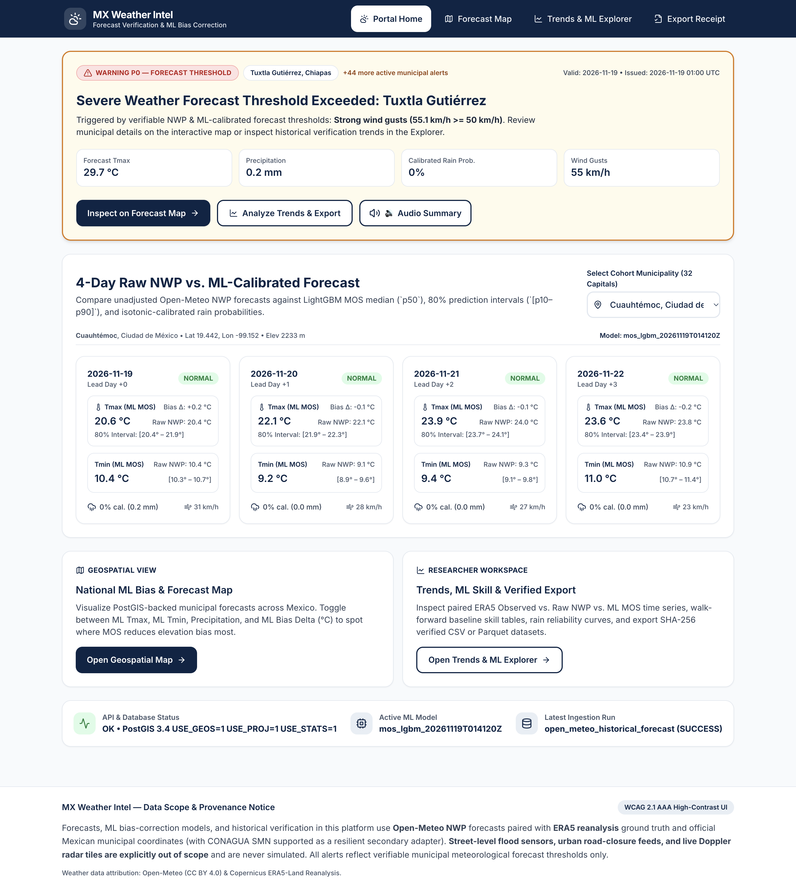
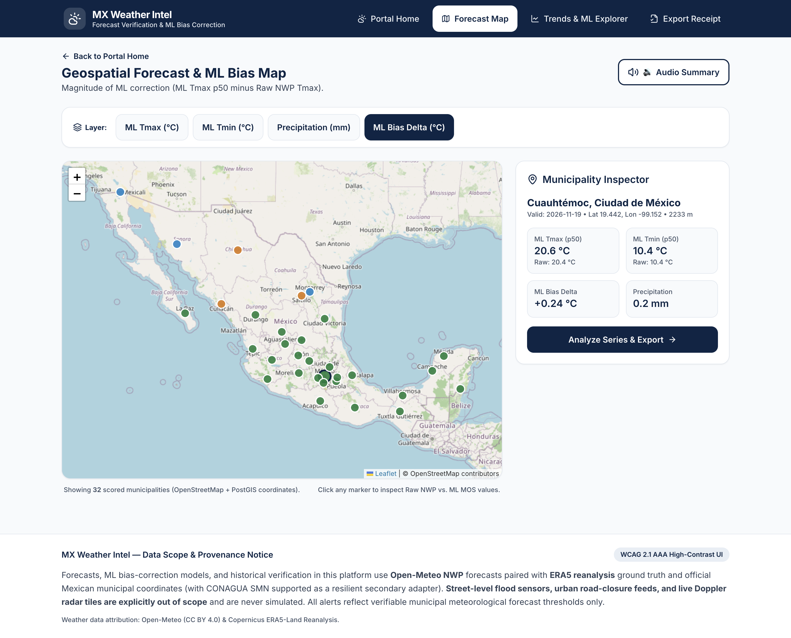
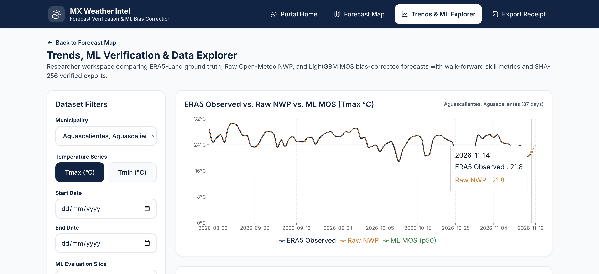
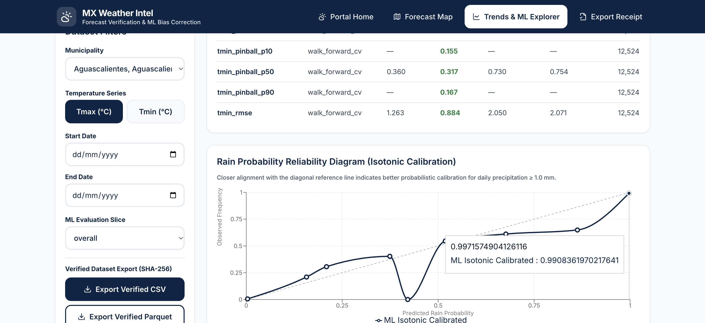

Mexico Weather Forecast Verification & ML Bias-Correction Platform
A production-style, single-workstation Data Engineering & AI/ML platform spanning 32 Mexican states (2,463 official municipalities) — combining revision-aware forecast ingestion, PostGIS spatial search, zero-leakage point-in-time LightGBM quantile post-processing, SHA-256 verified CSV/Parquet exports, and an accessible GoogleUX web portal.
Engineering Architecture
Designed to complement batch lakehouse workloads with operational relational/geospatial engineering, fault-tolerant API ingestion, strict point-in-time ML controls, and typed web serving.
Dual-Source Resilient Ingestion
Open-Meteo (ERA5-Land + Historical/Live Forecast, CC BY 4.0) acts as the reliable primary feed, while the CONAGUA SMN GZip adapter handles upstream HTTP 500/timeouts with a graceful DEGRADED_UPSTREAM circuit breaker and offline golden-fixture tests.
Revision-Aware PostGIS Schema
Composite PK (source_provider, state_id, municipality_id, issued_at, valid_date) preserves forecast revisions, enforces valid_date >= issued_at::date via DB CHECK constraints, and indexes 2,463 municipalities with PostGIS GEOGRAPHY(POINT, 4326) GiST.
Zero-Leakage MOS & Calibration
Strictly lagged station-bias features verified by an automated future-perturbation test (+999.0 target mutation asserts bit-for-bit identical features). LightGBM p10/p50/p90 quantile models + Isotonic rain calibration stored in a local SHA-256 registry.
Typed API & WCAG 2.1 AAA UI
FastAPI serves PostGIS radius queries, Raw vs. ML forecasts, skill metrics, and SHA-256 verified CSV/Parquet streams (p50 = 1.0–29.8 ms) to a responsive React + Leaflet + Recharts UI with Web Speech API audio summaries.
Verified Real-Data ML Holdout Benchmarks
Model mos_lgbm_20261119T014120Z evaluated on strictly held-out temporal test data (n = 3,410 municipality-days across 31 Mexican state capitals, 2024-11-14 to 2026-11-14).
| Metric | Raw NWP | Persistence (t-1) | 30d Climatology | LightGBM MOS + Isotonic | Delta vs. Raw NWP |
|---|---|---|---|---|---|
| tmax MAE (°C) | 0.422 | 1.575 | 1.733 | 0.351 | -16.8% |
| tmax RMSE (°C) | 0.913 | 2.176 | 2.401 | 0.633 | -30.7% |
| tmax Bias (°C) | +0.300 | +0.106 | +0.570 | +0.012 | Bias eliminated |
| tmax 80% Coverage | — | — | — | 79.7% | Target 80.0% |
| tmin MAE (°C) | 0.348 | 1.177 | 1.168 | 0.343 | -1.3% |
| tmin RMSE (°C) | 0.673 | 1.625 | 1.700 | 0.570 | -15.3% |
| tmin 80% Coverage | — | — | — | 77.2% | Target 80.0% |
| Rain (>=1mm) Brier Score | 0.1453 | 0.3616 | 0.2238 | 0.0331 | -77.2% |
| Rain (>=1mm) ECE (10 bins) | 0.0762 | 0.3616 | 0.0585 | 0.0113 | -85.2% |
Live Verified UI Preview (WCAG 2.1 AAA)
Adapted from a Google UX Design System (Deep Navy #0B2545, Amber P0 #FFFBEB/#D97706, 48×48px touch targets, semantic landmarks) with explicit scope honesty — alerts reflect meteorological forecast thresholds only, never fabricated street sensors.




100% Local Docker Quickstart
git clone https://github.com/emilianodesu/mx-weather-mos.git cd mx-weather-mos # 1. Start PostGIS, run Alembic migrations, and seed 32 states / 2,463 municipalities docker compose up -d postgres docker compose run --rm pipeline alembic upgrade head docker compose run --rm pipeline python scripts/seed_catalog.py # 2. Backfill historical paired data, ingest live forecasts, train & score LightGBM MOS docker compose run --rm pipeline python scripts/run_backfill.py --months 24 --skip-existing --delay 2.0 docker compose run --rm pipeline python scripts/run_daily_ingest.py docker compose run --rm pipeline python scripts/train_models.py docker compose run --rm pipeline python scripts/score_forecasts.py # 3. Launch FastAPI (http://127.0.0.1:8000/docs) and Web UI (http://127.0.0.1:5173) docker compose up -d --build